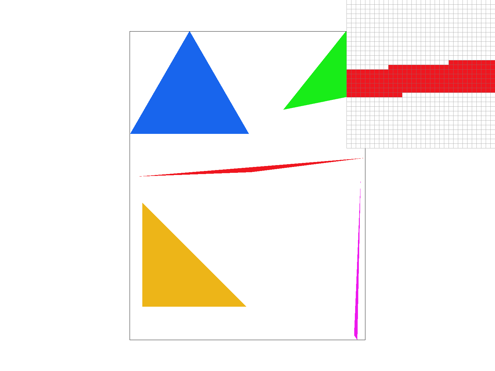
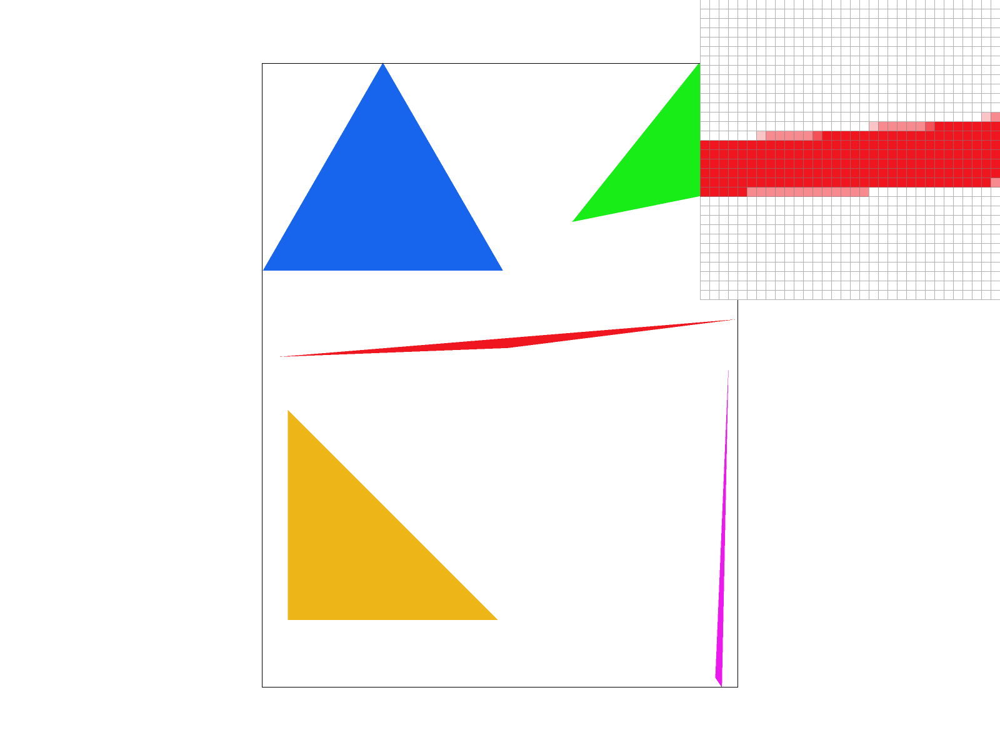
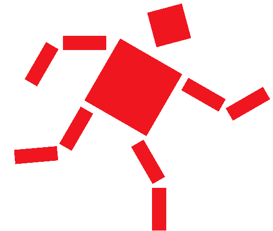
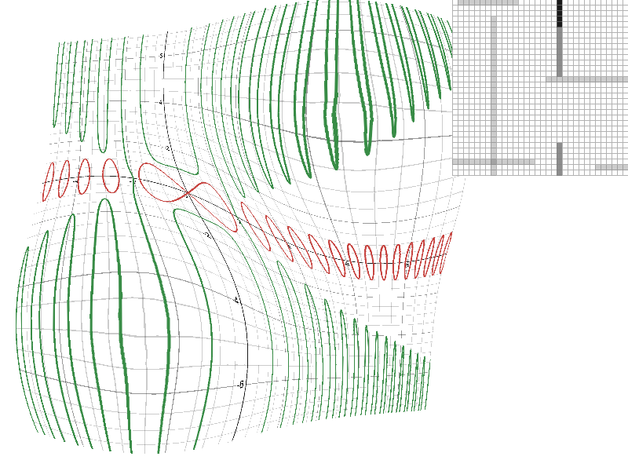
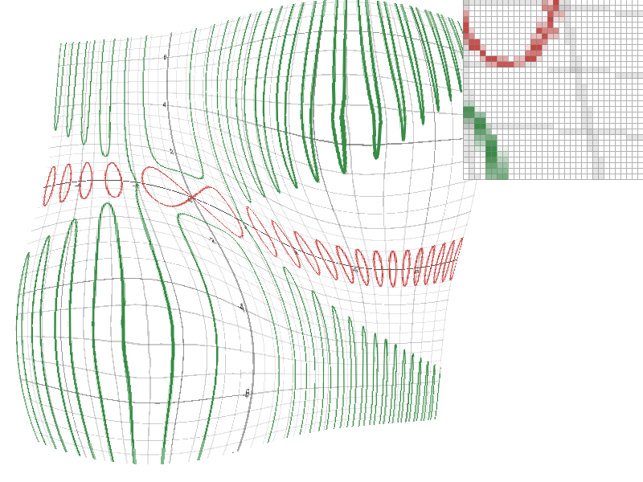
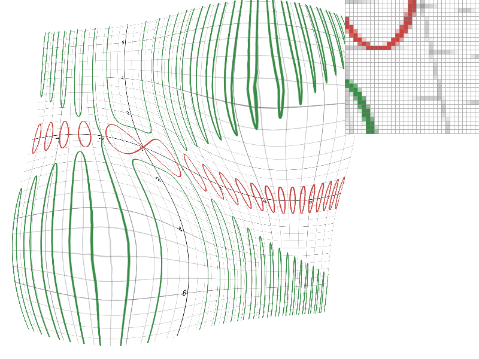
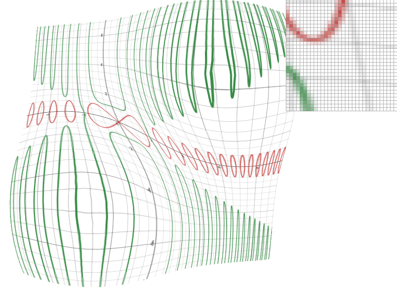

CS184/284A Spring 2025 Homework 1 Write-Up
Names: Ian Wong, Andy Wang
Link to webpage: https://cal-cs184-student.github.io/hw-webpages-pants/hw1/index.html
Link to GitHub repository: https://github.com/cal-cs184-student/sp25-hw1-team-miya
Overview
In this homework, we implemented several parts of the rasterization pipeline to create a functioning SVG rendering: rasterizization, transforms, and texture mapping. We explored various antialiasing techniques including supersampling, level sampling (mipmaps), and pixel sampling with different tradeoffs between compute, memory, and antialiasing power.Task 1: Drawing Single-Color Triangles
Task Overview
To rasterize a triangle, we have to determine which pixels on the screen to color. We do this by testing the center of each pixel to see if it lies inside the triangle. This process involves:- Finding the smallest rectangle that completely contains the triangle, or the bounding box
- Checking if the center of each pixel within the bounding box lies inside the triangle
- Coloring the pixels that pass the point-in-triangle test
Step-by-Step
- Calculate the Bounding Box: The bounding box is the smallest rectangle that encloses the triangle. It is defined by the minimum and maximum x and y coordinates of the triangle's vertices. This ensures that we only iterate over pixels that could possibly be inside the triangle.
- Iterate over the Bounding Box: For each pixel in the bounding box
- Calculate the center of the pixel:
(px, py) = (x + 0.5, y + 0.5) - Perform the point-in-triangle test to determine if
(px, py)lies inside the triangle - Point-in-Triangle Test: The point-in-triangle test uses the three-line test. For each edge of the triangle:
- Compute the cross product of the edge vector and the vector from the edge's starting vertex to the sample point
- If the point lies on the same side of all three edges, it is inside the triangle
- Compute the winding order of the triangle by checking the cross product of two edges and adjust the point-in-triangle test if necessary
- Fill the Pixel: If the sample point
(px, py)passes the point-in-triangle test, call(x, y, color)to color the pixel.
Algorithm Efficiency
The algorithm is no worse than one that checks each sample within the bounding box because:- Bounding Box Optimization: By limiting the iteration to the bounding box, the algorithm avoids checking pixels that are guaranteed to be outside the triangle, which reduces the number of pixel checks significantly
- Point-in-Triangle Test: The three-line test is efficient and involves only a few arithmetic operations per pixel
Optimizations
As an optimization, we also implemented rasterization using an incremental version of the line test. Because the samples are evenly spaced and computations for the line test are linear, the change in the result for the line test is constant per change in sample. Here is a derivation of this fact. For the line test at point \( (x, y) \) and line between \( (u_x, u_y) \) and \( (v_x, v_y) \), the formula for line test is \[ \begin{align*} L(x, y) &= -(x - u_x)(v_y - u_y) + (y - u_y)(v_x - u_x) \\ &= -(x - u_x) Y_{uv} + (y - u_y) X_{uv} \end{align*} \] Where \( Y_{uv} = v_y - u_y \) and \( X_{uv} = v_x - u_x \). L is affine in \( x \) and in \( y \), so we can see that for a change by one unit in the x or y direction: \[ \begin{align*} L(x + 1, y) - L(x, y) &= Y_{uv} \\ L(x, y + 1) - L(x, y) &= X_{uv} \\ \end{align*} \] Importantly, this change is constant, so we can precompute it once and simply add the difference as the x and y coordinate changes. The line test is more expensive than this simple addition, requiring several subtractions and multiplications. The performance impact was compared to our initial implementation by using the average time to callredraw() averaged over 10,000 calls.
The initial implementation averaged about 3.3 ms per call. The optimized
implementation averaged about 2.5 ms per call.
Task 2: Antialiasing by Supersampling
Supersampling reduces aliasing (jagged edges) in rasterized images by sampling multiple points within each pixel and averaging their colors.Data Structures
- sample_buffer: Stores color values of all supersamples for each pixel. Size:
width * height * sample_rate. - rgb_framebuffer_target: Stores final 8-bit RGB values for each pixel. Size:
3 * width * height.
Supersampling Algorithm
- Rasterize into
sample_buffer - Divide each pixel into a grid of
sample_side x sample_sidesubsamples, wheresample_side = sqrt(sample_rate). - For each subsample
(sx, sy):- Calculate the sample point
(px, py)within the pixel: - Perform the point-in-triangle test to determine if the sample lies inside the triangle.
- If the sample is inside the triangle, store its color in the
sample_bufferat the corresponding index:
- Calculate the sample point
- Resolve
sample_bufferintorgb_framebuffer_target - Accumulate the colors of all subsamples for each pixel:
- Average the accumulated color by dividing by
sample_rate: - Convert the averaged color to 8-bit RGB and store it in the
rgb_framebuffer_target:
Modifications to Rasterization Pipeline
- Rasterize into
sample_buffer(higher resolution) - Resolve
sample_bufferintorgb_framebuffer_targetby averaging subsamples - Display the final framebuffer
|

|

|
|
|
Conclusion
Supersampling improves visual quality by reducing aliasing. Key modifications include rasterizing into a higher-resolution sample_buffer and resolving it into the final framebuffer by averaging subsamples.
Task 3: Transforms
Below is an image of a robot running. The image is a rendering of a SVG image that the three implemented transforms.

Task 4: Barycentric coordinates
(2D) Barycentric coordinates are a coordinate system relative to a specific triangle. For a triangle, three numbers make up the coordinates, each corresponding to one of the vertices. For points inside the triangle, all barycentric coordinates are between 0 and 1, and sum to 1. One geometric interpretation of barycentric coordinates is that each coordinate is the proportional distance from the edge opposite the correponding vertex to the vertex. Another interpretation is that each coordinate is the proportional area of the triangle formed by the point and the two other vertices that do not correspond to the coordinate. For a point with coordinates \( (x, y) \) inside a triangle ABC, where the triangle's vertices are \( (x_A, y_A), (x_B, y_B), , (x_C, y_C) \), the barycentric coordinates \( (\alpha, \beta, \gamma) \) are calculated as follows: \[ \alpha = \frac{L_{BC} (x, y)}{L_{BC} (x_A, y_A)} \\ \beta = \frac{L_{AC} (x, y)}{L_{AC} (x_B, y_B)} \\ \gamma = \frac{L_{AB} (x, y)}{L_{AB} (x_C, y_C)} \] where \( L_{AB} \) is the line test equation for the line AB as described in section Task 1. For a visual understanding, consider the below triangle. The vertices are assigned red, blue, and green, respectively, and barycentric coordinates interpolate between the three colors. At the red vertex, for example, the coordinate corresponding to the vertex is 1, while the other two coordinates are zero, so the resulting pixel color is red. Between the red and blue vertices, the barycentric coordinates are 0.5 for the red and blue vertices, and 0 for the green. Therefore, the resulting color is purple, an even blend between red and blue.svg/basic/test7.svg)

Task 5: "Pixel sampling" for texture mapping
Pixel sampling is a method to draw triangles with textures by using pixel(s) in the texture that correspond to a sample in the triangle to determine the color of the triangle sample. My implementation is as follows: For each triangle sample, calculate the corresponding UV coordinate by taking a interpolation of the three vertices' UV coordinates using the barycentric coordinates of the sample. Barycentric coordinates as described in the section for Task 4. Mathematically, if the barycentric coordinates of the sample are \( (\alpha, \beta, \gamma) \) and vertices of the triangles have UV coordinates of \( (u_1, v_1) \), \( (u_2, v_2) \), \( (u_3, v_3) \), then then resulting UV coordinates are \( (\alpha u_1 + \beta u_2 + \gamma u_3, \alpha v_1 + \beta v_2 + \gamma v_3) \) The UV coordinate is scaled by the texture's width and height in the corresponding coordinate and is then used to sample from the texture. Two different methods of samplingn are implemented:- Nearest neighbor: Sample from the texture pixel closest to the scaled UV coordinate
- Bilinear: Sample from the four nearest texture pixels and linearly interpolate between the four


Task 6: "Level Sampling" with mipmaps for texture mapping
Level sampling is technique to reduce aliasing in texture mapping by sampling from pre-downsampled textures. The different texture resolutions are called levels or mipmaps. The downsampled textures are effectively low-pass filtered, so higher frequencies are filtered out. At each sample, a texture is chosen with a frequencies that approximately matches the screen sampling rate, therefore reducing aliasing. In my implementation, the screen sampling rate is estimated by calculating the change in the uv coordinates when changing the x and y screen coordinates each by 1 separately. For the function \( f(x, y) \) mapping x, y coordinates to u, v coordinates \[ \begin{bmatrix} \frac{du}{dx} \\ \frac{dv}{dx} \end{bmatrix} \approx f(x, y) - f(x + 1, y) \\ \begin{bmatrix} \frac{du}{dy} \\ \frac{dv}{dy} \end{bmatrix} \approx f(x, y) - f(x, y + 1) \] The maximum magnitude of the change in uv coordinates from either the change in x or y is used to calculate the texture level to sample from. \[ D = \max \left( \left \Vert \begin{bmatrix} \frac{du}{dx} \\ \frac{dv}{dx} \end{bmatrix} \right \Vert, \left \Vert \begin{bmatrix} \frac{du}{dx} \\ \frac{dv}{dx} \end{bmatrix} \right \Vert \right) \\ \text{level} = \log_2 D \] Lower levels correspond to higher resolutions because lower levels result from lower ask screen sampling rates, which require less filtering. For example, level 0 is the full resolution texture while level 2 is a 4x4 downsample. Just as there are different pixel sampling methods, there are different level sampling methods. Two methods are implemented: nearest and linear. Nearest samples from mipmap with the closest level, while linear takes a linear interpolation of samples for the two nearest levels. Pixel sampling, level sampling, and the number of samples per pixel can all be combined and used independently about come with tradeoffs between speed, memory usage, and antialiasing power. Pixel sampling is the fastest and has the least memory usage because it simply samples from the same texture an additional number of times. It also has the least antialiasing power because it only samples from a small number of pixels from the immediate surroundings. Below a comparision for the different combinations of techniques applied to an image| Level sampling | ||||
|---|---|---|---|---|
| None (Level 0) | Nearest | |||
| Pixel Sampling |
||||
| Nearest neighbor |
 |  | ||
| Linear |  |  | ||